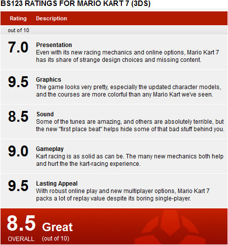

SPOILER ALERT: Unlockable content discussed below.
Mario Kart is a system seller. It was for the DS and it was for the Wii. It’s no wonder that Nintendo tried to slap down Mario Kart 7 onto the 3DS as soon as possible. And what did we get from it? A solid Mario Kart title that could have been a whole lot better.
Let me start off by saying that Mario Kart 7 is a great game. But when it comes to first impressions, 7 is truly lacking, which is quite apparent when you first start the game. The game has no title screen, nor any sort of file selection. Instead, you are greeted with a loading screen, foreshadowing significant loading times found throughout the game. Mario Kart 7 then jumps you right onto the streamlined menus that look sleek but a bit bland. You’re given the choice to play single-player, multi-player, online, or check out the Mario Kart Channel, all of which will be discussed in detail in this review.
Let us begin!
Let’s first start off with the single-player. Upon choosing the single-player option, you will be presented with a choice of doing a 4-race Grand Prix, Time Trials, or one of two different battle modes. As always, the Grand Prix allows you to play through four courses in each specified cup, with four cups available to play immediately while four more cups are unlocked as you progress. Unlike Mario Kart Wii, all 3 difficulty classes are unlocked at the get-go, but only by playing through the 150cc difficulty will you any new characters, which basically means that the first to cc difficulty levels are completely useless. Mirror mode can also be unlocked, which allows you to play through each of the 32 courses with each turn reversed. But even though you’re unlocking things along the way, Mario Kart 7’s Grand Prix is tiresome and tedious, and proves that Nintendo has to do something drastic in order for Grand Prix to feel fun again.
Even though it’s been a while since the last Mario Kart, many things in Mario Kart 7 will become instantly familiar to fans of the series. Drifting in this game is a mix of both the manual and automatic option in Mario Kart Wii. Press and hold R to drift, and if you drift long enough, you will get a temporary speed boost. Those who choose not to use drift can feel at ease because if you turn hard enough, you’ll find that the Mario Kart 64 style of turning has made a welcome return. Mario Kart Wii’s trick system also makes a return in Mario Kart 7, but this time you do tricks by pressing the same button as you would do to drift. What does this mean? You can’t drift while doing tricks anymore, adding a (probably unwanted) sense of strategy to Mario Kart.
Along with the old mechanics, Mario Kart 7 includes several new ones. Upon hitting blue ramps, your kart will now sprout a hanglider that adds a lot of strategy into the game. You’ll be steering your Kart in the air naturally in no time as you glide to dodge numerous enemies and obstacle while you try your best not to land outside of the course. Gliding is a very welcome addition to Mario Kart and adds a new layer of depth to the franchise. Unfortunately, the new underwater mechanics detract from the value of the game. Even though it may seem fun and creative, the underwater mechanics exist primarily to take up space in the game, and while the wacky physics may feel novel at first, the tremendous slowdown that occurs when you come in contact with water feels more like an annoyance than anything else.
I never want to see this again, Nintendo. Never.
Coins also make a return to the Mario Kart series after being absent since the GBA’s Super Circuit. Coins are scattered around each course and function in a number of ways in this game. First off, coins give you a small but immediate speed boost when you come in contact with them. Coins also increase your kart’s max speed, with a maximum of ten coins per race. Last of all, coins allow you to unlock new kart parts that you can customize to alter the stats of your vehicle. Reach a certain amount of collected coins, and a random part will be unlocked for your liking.
Another new mechanic in Mario Kart 7 is the ability to race in first person. Such a thing may seem trivial and pointless, but racing in first person is actually a lot of fun. You also have the option to use gyro controls in this mode, though you can still use the circle pad and even turn the gyroscope off if you want. For what it is, the gyroscope works well enough for those who like that kind of thing to enjoy the heck out of it, and for those who just want to try it out, you'll be surprised by how fast the ground moves by you in first person. Interestingly, the 3D isn’t easily blurred when tilting the system in this game, mostly because the 3D effect is barely noticeable when playing.
New feature. Surprisingly fun.
Mario Kart 7 includes 16 brand new courses and 16 remade “retro” courses from previous games. But while the Nintendo did a good job in choosing its retro courses, the new ones are a bit disappointing. The entire Mushroom Cup is just racing around a track with little obstacles or challenge. Some other courses like Music Park or Piranha Plant Slide seem to have too many obstacles and feel a bit annoying. Despite some lackluster new tracks, there are many that pop out and shine like Rainbow Road and Bowser’s Castle. Also, Nintendo took the time to mix things up by adding long one-lap tracks that are separated into three sections. The music in this game is also mixed. Some courses have very annoying songs like in Daisy Hills, some that don’t really sound like anything like in Shy Guy Bazaar, and others that sound great like in Neo Bowser City. But one can’t help but notice that many sound effects are reused from Mario Kart Wii, which is appalling since each Mario Kart game usually comes with a new set of sounds and music. Fortunately, such a slight downfall is covered by the addition of the new “first place beat,” which adds an extra layer of percussion to the music when you’re in first place. The retro courses have undergone major redesigns, as courses like N64 Koopa Beach don’t even look like it did in the original. These retro courses have also been altered to fit new glider and underwater segments, which makes me wonder why Nintendo didn’t choose to go with N64 Royal Raceway or Wii Wario Goldmine and instead opted for N64 Luigi Raceway and Wii Coconut Mall. And did I mention that there are two Wuhu Island stages in this game? I have nothing against Wuhu, and the courses are really actually quite fun, but Wuhu has no place in Mario Kart, and seems to reflect the laziness in the Mario Kart team to create new and exciting courses.
Of course, what’s Mario Kart without items? Along with the usual banana peels and Koopa shells come an updated spiny blue shell (now wingless a la Mario Kart 64) and 3 new items: the Tanooki Suit, the Fire Flower, and the Lucky 7. The Tanooki Suit allows you to whack your tail around at opponents and obstacles. The Fire Flower allows you to throw fireballs at opponents to try to spin them out. The Lucky 7 is a unique item, which gives you 7 random items that spin around you. But be careful; other players can steal those items from you if you don’t use them immediately, making the item feel more like a strategic tool than a cheap way to win. In fact, all of Mario Kart 7’s items have been balanced out, making you feel a lot better when you’re racing alongside the CPU. Surprisingly, Nintendo has done away with the fake item block this time around, which isn't really at all noticeable until you really think about it.
If you&#Array;re not careful, that bomb may explode on you...
Mario Kart 7 features an interesting roster of playable characters. As always, each character is set in a specific weight class with specific base stats (ultimately, it is the kart parts that really change the stats on your character). You can still race as the classic 8 characters from the old Mario Kart games, but several new ones like Wiggler and Queen Bee just feel out of place, especially when iconic characters like Waluigi and Dry Bones didn’t make the cut. And Metal Mario as a playable character is just a sign of laziness.
Time Trials has gotten a significant upgrade since we last saw it. In Mario Kart 7, you can now gather ghosts via streetpass or spotpass, both of which are obtained from the Mario Kart Channel. You can race against these ghosts as well as your own ghosts while you try to get the best time. There are no worldwide leaderboards this time around, but Mario Kart doesn’t really need it. You can see, though, the trendline in which where most time-trial ghosts fall into in terms of racing times for each course. Gather enough ghosts, and you’ll be able to race against seven of them at the same time. All of these added features make Time Trials the best it’s ever been in a Mario Kart game.
Mario Kart 7’s battle modes are a bit different from earlier iterations. Players will be able to battle on six battle stages, 3 retro ones and 3 brand new ones, with the option of choosing one of two different battle modes. In balloon battle, players use items to try to hit other players, earning them one point per hit. Losing all of your balloons causes you to lose points. This process continues until time runs out, in which the person with the most points wins. Though this is a definite improvement from Mario Kart Wii, 7’s battle mode fails to reach the greatness of Mario Kart 64’s battle mode. Coin runners, a mode that makes its return from Mario Kart Wii, puts players in a race against time to try to collect coins without getting hit and losing coins.
Better than Mario Kart Wii, that&#Array;s for sure.
Interestingly, the single-player vs. mode has completely disappeared from Mario Kart 7, which means that if you want to play against the computer player on a course like Rainbow Road, you’re going to have to play through the entire cup to get there. It’s a bit strange that Nintendo didn’t care to include it, as it’s been available for quite some time now in the past Mario Kart games. Also gone are the DS’ mission mode and its follow-up the Wii’s Tournaments. Without these elements, Mario Kart 7’s single-player experience is absolutely abysmal, and further reestablishes the fact that Nintendo only spent a little more than a year to make this game.
But enough of the single-player stuff. Though I do have many complaints the single-player experience, the multi-player is, as always, where Mario Kart shines. You have the option to choose between local or online play. Local multiplayer allows you to play either with single-card download play or multi-card play. Single-card play only allows the person with the game card to choose their characters or carts with non-Mario Kart 7 owners being forced to use Shy Guy (which isn’t that bad of a choice considering the rather disappointing roster). Fortunately, you now have the option to choose any course you want, regardless of which kind of multi-player you choose. You can even customize your own rules (like bob-omb only balloon battle; sound familiar?) to your own liking, though it is a bit limited (you can’t turn blue shells off).
Online play has greatly improved since Mario Kart Wii. Along with the ability to play random players worldwide, you can now race against people you’ve recently played against as well as in new online communities. Anyone can make communities and set certain rules for them (once again, these rules are very limited) and share a very long code online. Considering QR functionality in many 3DS apps, it’s a wonder to me why Nintendo chose to go back to numerical codes when all you really have to do is take a picture. In terms of the online experience, Nintendo has delivered. There is very little lag (and when there is, the game does a good job in hiding it) and, like all of the other modes, it runs at a glorious 60fps. Winning online races allows you to gain verses rating points to prove to your opponents that you are indeed the best in the group (or the worst, it really depends). Of course, losing the race causes you to lose VR points. Communities also now have their own leaderboards, which uses a point-based system found in the Grand Prix instead of the VR scale in the other online modes, which is a bit strange, but still well-done.
This is easily the best part of Mario Kart 7.
As mentioned before, the Mario Kart Channel (which isn’t really a channel, but an in-game menu) takes care of the streetpass and spotpass stuff, giving you community suggestions and random ghosts. You can also change your Mii and your default kart here, along with your online stats including wins, losses, and VR. It’s a fun little addition that integrates itself seamlessly into the game; you don’t even have to go into the Mario Kart Channel to access most of these features.
As a whole, Mario Kart 7 is a great game. It has robust multi-player and online options, some awesome courses (especially the retro ones), cool new in-game mechanics, great new time trial options, and the ability to download new ghosts, all of which enhance the Mario Kart experience. Unfortunately, the lack of single-player versus, a disappointing character roster, many uninspired courses, a boring single-player experience, and annoying underwater sections prevent this game from being a must-buy. But by all means, if you love Mario Kart, then go out and buy Mario Kart 7, because it is actually be quite fun (especially online), but fun can’t always hide the fact that Mario Kart 7 leaves you wanting for more, which isn’t always a good thing.
